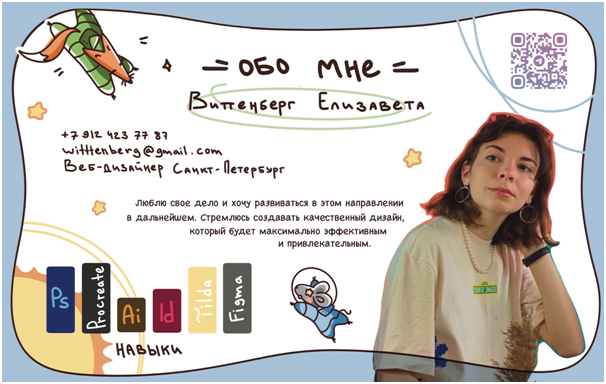

Грамота за анимационную Новогоднюю открытку для сайта КТМУ
Сертификат за участие в проектной школе “дизайн молодых” от Политехнического университета
Диплом за участие финале выставке графических дизайнеров
Виттенберг Елизавета
Электронная почта: elizavetavitenberg@mail.ru
Образование:
Колледж (2020-2024)
Специальность: Веб-дизайн
Степень: Бакалавр
Навыки:
- Владение графическими программами (Photoshop, Illustrator, Sketch)
- Опыт работы с адаптивной версткой
- Умение создавать пользовательские интерфейсы
- Навыки графического дизайна
- Люблю делать что-то своими руками
Дополнительная информация:
- Отличные коммуникативные навыки
- Способность работать в команде
- Стремление к саморазвитию и изучению новых технологий
Я заинтересована в возможности развиваться как веб-дизайнер и применять свои знания и навыки для создания уникальных и качественных веб-проектов. Готова к новым вызовам и готова к росту в профессиональном плане!
Соцсети: ВК: vk.com/witttenberg
ТГ: t.me/witttenberg
Inst: instagram.com/3.25p